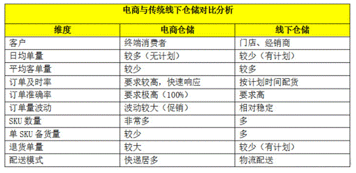
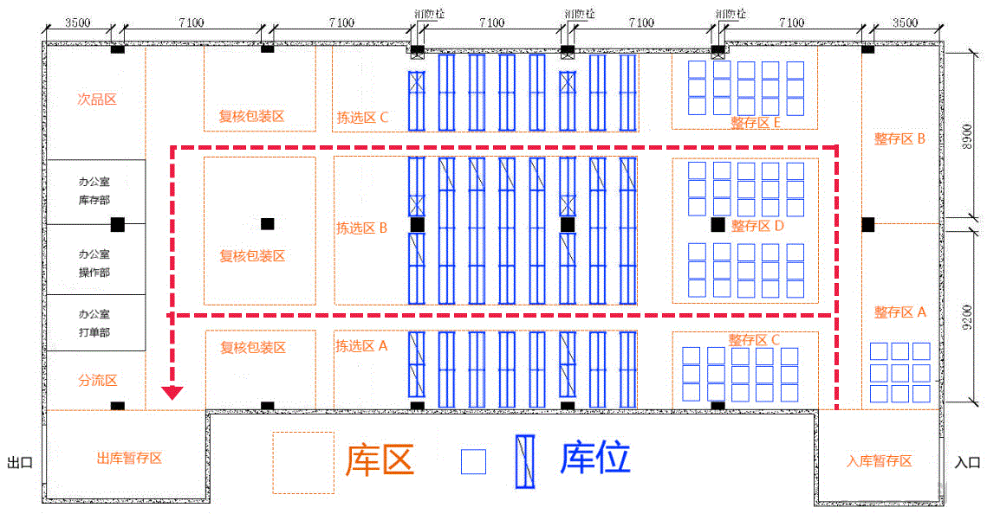
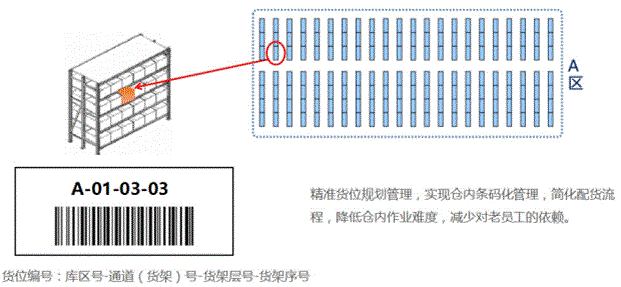
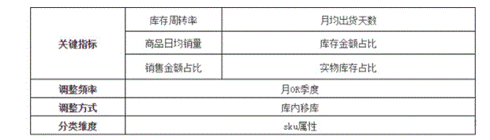
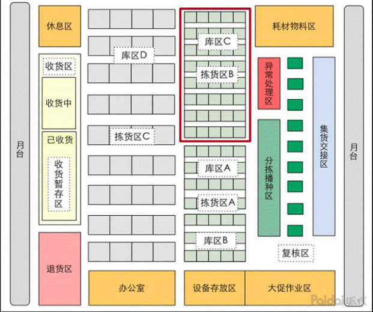
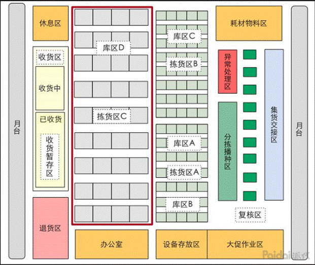
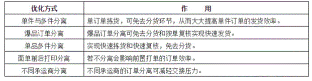
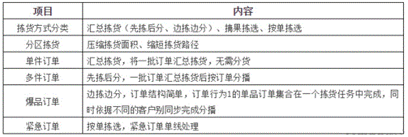
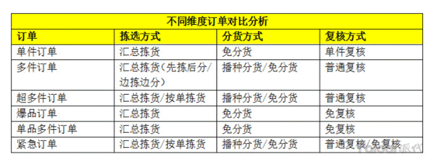

电商仓储和传统仓储的区别分析与管理建议
2018-8-28
电商仓储和传统线下仓储虽然看起来都是仓储管理，但是在管理层面却又本质的区别。万里牛通过分析对比来反映出电商仓储的特点及难点，从而为电商仓储规划提供方向。为大家分享在电商淡季时，如何抓住时间调整和优化仓储各项流程，为类似618、双11这样的电商大促做好充足的准备。

通过线上仓与线下仓的对比，我们可以看电商仓具有以下5大特点：
（1）订单的未知性：订单无计划，下单信息不能提前预知
（2）订单的波动性：大促对订单波动影响较大
（3）人员的灵活性：订单波动要求人员调配更加灵活
（4）仓储的零散性：库存越来越靠近消费者
（5）平台的多样化：针对不同平台的业务需要不同的流程
根据电商的特点，万里牛建议电商商家从以下几个方面对电商仓储进行优化：
一、电商仓储规划
在做整体的仓储规划前，电商首先采集一段时间的关键数据，比如商品信息、日均单量、作业效率、库存存量等，分析订单的出货特点和业务规律从而初步判断出所需仓库的规模、仓库类型、货架的类型和数量、设备和包材的选择以及人员的配置和业务流程等。同时要分析日常的数据和大促活动时的数据，从而综合考虑各项数据来创建仓储模型。
二、仓库布局的规划
根据之前的数据分析结果，从全局角度来规划所需要的各项功能区，包括所需要的面积和货架等。在规划功能区的时候也要注意各项功能区之间，以及单个功能区内部的动线，预留好主辅通道，有平衡重或者前移式叉车的仓库还要注意各通道的宽度，预留好安全距离。

三、拣货路径规划
S形拣货动线：拣货员在整个拣货区以大S形的路径行走拣货，进入巷道后以“Z”字形或“S”形的路线拣货；这种拣货动线比较适合中层隔板货架的仓库，可以实现拣货的最短路径。
U形拣货动线：拣货员在整个货架外围和巷道中都是以大小U形的动线来拣货，这种拣货动线比较适合巷道宽度比较宽的高位立体货架区。
具体使用哪一种，大家根据自己的实际场景来选择。
四、库位规划
其实库位规划我们可以把它理解为给库位编码，好的库位编码可以帮助仓库作业人员快速定位库存位置。

五、库存优化
当企业存货品种繁多、单价高低悬殊、存量多寡不一时，使用ABC分类法可以分清主次、抓住重点、区别对待，使存货控制更方便有效。
ABC管理法的基本原理：对企业库存（物料、在制品、产成品）按其重要程度、价值高低、资金占用或消耗数量等进行分类。
1）ABC分类规则

A类商品也就是我们常说的快消品，具有销量高、周转快、月出货天数占比高等特点，适合存储与靠近复核区的拣货区域，也是全仓动线最优的拣货区域，从而提高整体发货效率。同时也是全仓拣货频率最高最集中的区域，同一拣货路径下可以拣选更多的订单，因此也是全仓进行异动盘点的核心区域。

C类商品就是我们常说的出货量和频率都非常低的滞销品或者不动销，这类商品因为常年不动或者变动较少，我们可以把这类商品存放于库区的后端，盘点的优先级也相对较低。

B类商品就是出货量相对较少，出货频率较低的商品。这类商品仓储位置仅次于A类商品的库区，相对接近分货及复核等作业区。拣货频率和库位均介于AC之间。

六、库存合并优化
库存合并策略：
1）将相同sku尽量合并至同一库位，避免过度分散，使拣货区域更集中；
2）将总库存量相对较少（1-3个）的sku进行合并，最大化利用库位空间，但要注意控制库位的混放上线。
七、订单波次及拣货优化
1）波次分组优化

2）拣货原则


汇总拣货中的边拣边分则适用于商品体积形态较小的电商企业，如服装、化妆品、小饰品等电商企业，在汇总拣货环节即可同步完成分货作业，从而节省了播种分货的空间和人员。
要注意的一点就是无论是先拣后分还是边拣边分，都要注意拣货车和播种墙的格子数与汇总的拣货单中订单的最大上限要一致，否则会导致订单溢出。边拣边分的拣货车也可以被理解为可移动的小型播种墙。
八、拣货工具优化
拣货工具主要分为纸单拣选、PDA拣选。
传统的按面单拣选：拣货效率高、准确率相对较低、库存无法实时同步，依赖对仓库货品摆放位置熟悉的老员工，新人上手比较慢。而PDA拣选能够兼顾拣货效率和准确率，实现库存实时同步，并自动提示配货员到指定配置拣选指定商品的种类和数量，傻瓜式便捷操作，新老员工上手快。